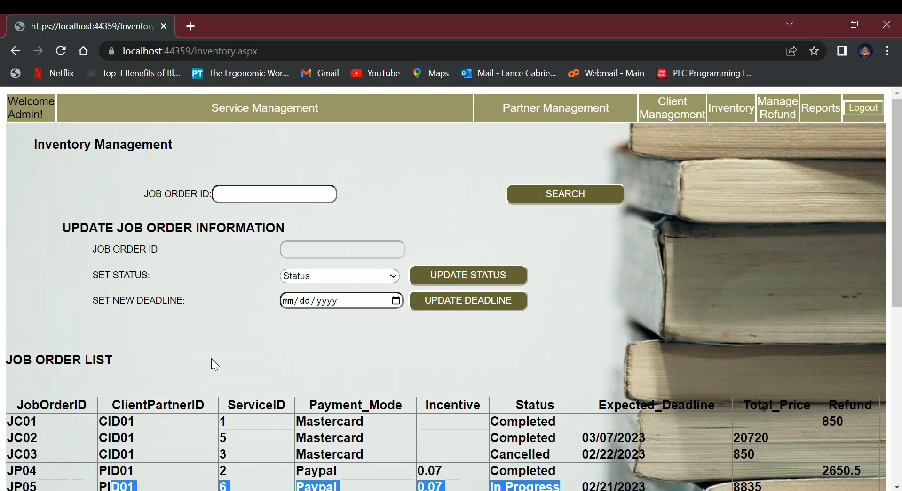
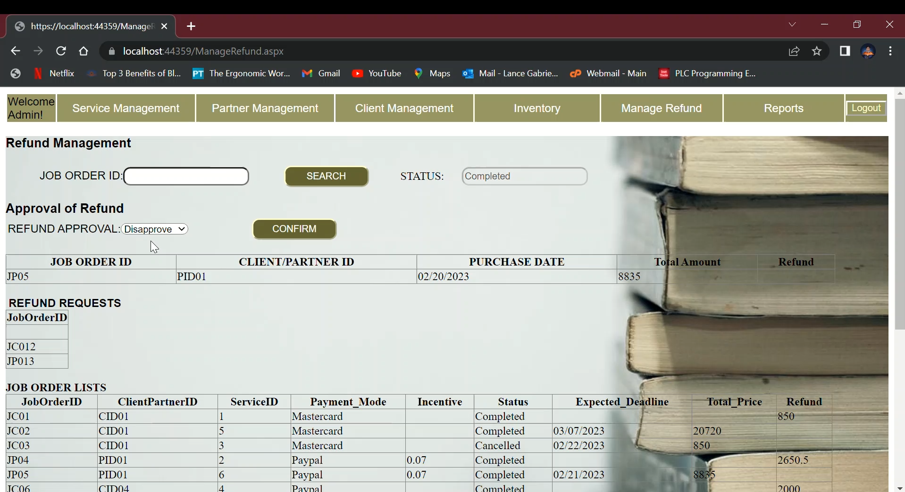
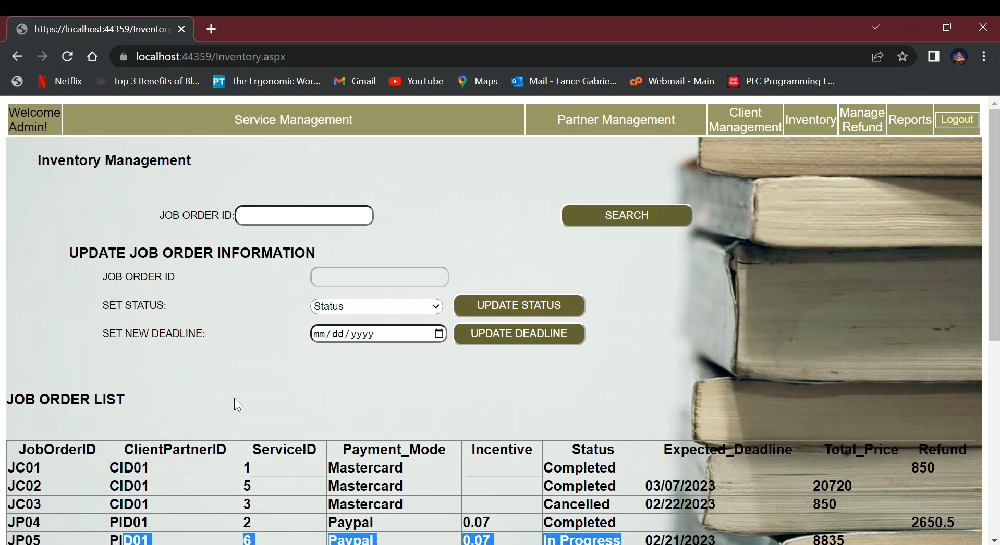
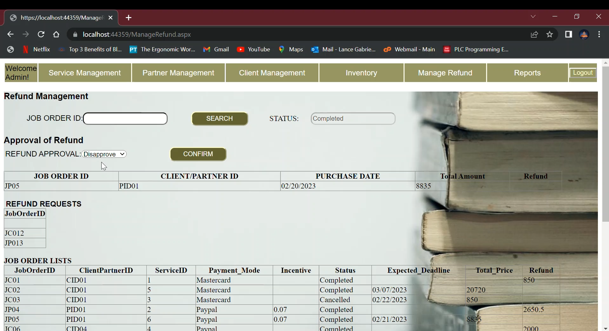

Year 2 Project
Website Project - IT114
For my Year 2 project at Mapúa Malayan Colleges Laguna, I developed a Book Services website to streamline printing, bookbinding, and distribution services for clients such as authors and publishers. The platform allowed users to submit print orders, customize binding options, and track distribution, providing an efficient solution for managing book production workflows.
The website was built using ASP.NET in Visual Studio, leveraging C# for backend logic and a SQL Server database for storing user data, order details, and service configurations. I implemented a responsive front-end with HTML, CSS, and Bootstrap to ensure accessibility across devices. Key challenges included designing a user-friendly interface for order customization and integrating the database with ASP.NET for real-time order tracking. I addressed these by using MVC architecture to separate concerns and optimizing database queries for performance. This project enhanced my skills in web development, database management, and ASP.NET, laying a strong foundation for my later IoT and Flutter projects.
View GitHub Repository
 


